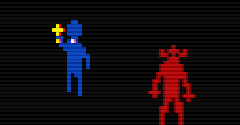
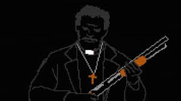

The second chapter begins with a prologue which depicts Father Garcia, a man hinted at following John in Chapter 1, in a secluded house in the woods. It’s revealed that h3e was the one holding Michale Davies captive, but he had a reason for doing it - Michael was possessed. Father Garcia had apparently been working on exorcising the demon from his body for at least three months. However, in this prologue, there is a power outage which allows Davies to escape into the woods, which explains why he was in the woods hunting John down in Chapter 1.
The actual chapter begins with John ward walking into a cemetery. The player is left with no choice but to enter a tomb house in this cemetery. In this tomb, the player encounters what are known as thralls. These thralls are later confirmed to be followers of the local cult in the town. The higher ranking ones are more typically dressed in a red robe, but these are the lower their ones, so they are simply seen as red, hoodless sprites. They all have white eyes that refuse to look at John as you walk down the hall and look into a mirror. When looking at this mirror, a cutscene plays, where Johns reflection doesn’t match him. It has glowing white eyes, and it smiles devilishly as it holds up a golden key. Spirits exit the thralls bodies, and now John is tasked with exorcising them all from the graveyard. All of these demons, once defeated, leave notes for the player.
After all three demons are beaten, John sees a distorted figure heading towards the tomb, and so the player should head there once again. Once John takes another look at the mirror, his demonic reflection takes the key and stabs it into his own eye, leaving John with the key and a bloody eye in the real world. With his key, and seeming to do fairly well considering he was just stabbed in the eye, John can now open the gate leading to the dilapidated church. Going towards it, the player can see a purple figure walking away in the corner of the screen. This figure is implied to be a child, most likely one of the twins. Why would one of the twins be here? Well, there are two reasons. The first reason is that the emptiness of the Martin family house in Chapter 1 implies that the parents have died, as well as the note John leaves to Molly, his partner, confirming it. One of John’s main missions is to find the twin boys in whatever adoption center or foster home they’re in. The second reason will be revealed later in this page.
Going to the left there's a confession booth. Inside, John confesses what he thinks are sins to an unknown person. He recounts his failed exorcism with Amy, saying that he broke his vows to God and the ministry for not being able to exorcise her demon. He then says that, a year later, Amy reached out to him again. However, he couldn't finish the exorcise again and left her to die in the forest. He asks to be forgiven for the current and past sins. The person in the confession booth gives him a penance: "BRING THE CHILD TO ME", saying that if he does this then God will forgive him. This is actually an ignorable task, as doing what the person says brings the player closer to the bad ending. Continuing on, however, the player must complete a puzzle involving candles in each room of the church, before engaging in a battle with the Spindly Lady. After this, John can walk down the stairs, and engage in another puzzle, before getting a newspaper article to read.
The newspaper article says that three young people were discovered dead in what seems like a pagan ritualistic murder outside the woods of Sterling, Connecticut. The recent discovery is a part of the latest wave of ritualistic killings. The victims, Sandra Attwood, Troy Ingles, and Angel Nogales were beheaded and stabbed multiple times. "Pandemonium regnat". Two of them were partially burned but the authorities would not specify who. They were found a couple of miles off of Gallup Cemetery, where locals reported seeing a desecrated tomb. They also found a blood trail leading into the woods, but investigators aren't saying if the two events are connected. The article matches the arrangement of the bodies to the style of several murders that happened in the Sterling area since 1986. It also says that the killings may be connected to last week's murder of Amy, a 17-year-old girl who was killed by an impersonated priest named John Ward. The article quickly spirals from here. The article asks the locals to report any suspicious activity to the authorities, and the authorities are saying to not mourn the loss of the victims because, "they were degenerate devil-worshipping thugs who were hooked on crack cocaine and hated their parents.". An unknown demonic voice now directly communicates to John through the article, saying that that's what he thinks the victims were; Three outcasts who got what they deserved. The entity says that John did the community a favor by finding them getting high in a tomb and killed them one-by-one by stalking them through the gravestones. It says that he ignored their cries for help as he put holes in their drug-addicted bodies and cut off their heads because everybody knows that's the only way you kill a snake. The entity starts to get more aggressive, saying that he didn't kill the snake, he can't kill what can't be killed. It says that he failed to kill Amy but can't destroy their works because it's work for the eternal dragon. It refers to Amy being "at thy door" and "at thy throat" but he cannot see her. The entity says they'll have her soul because "FOR I AM THE G O D O F T H I S W O R L D". The article becomes a complete mess; "PANDEMONIUM REGNAT SATANI VITAE" (translating from Latin to mean "Chaos reigns in Satan's home") repeats itself and an inverted cross fill the screen. The note ends with purple text saying, "I'M HERE, JOHN". Closing out of the screen, Amy's demon says, "YOU ARE MINE, PRIEST". The screen pops up to the dead bodies standing upright with fire on their beheaded shoulders. Cultists are seen in the background and Amy is staring directly at John. Rotoscope animation plays of John's body slowly melting with his eyes bleeding.
John has now turned into a demonic creature. The player can move him through the nearby sewer system, but once he goes under the overpass, he is miraculously human again. Entering the main sewer system, John comes across a note detailing the discovery of two bodies left from a shootout earlier. There is now a quick encounter with another demon.

This encounter is very simple - just don’t move. Once the hand demon leaves, you can continue on your journey. shortly after this and another actual boss battle, John is seen in the house of malphas. Inside, the real boss battle begins, as a demon lady runs at John, only to be exorcized by Father Garcia, who is apparently here to help John. With the two of them together, they fight the Gray demonic nun known as Miriam. However, after the battle ends, Miriam is seen running at John, before John wakes up - apparently everything in Chapter two was all a dream! That does NOT stop it’s importance to the lore whatsoever, though…
